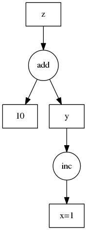

Task Graphs¶
Internally, Dask encodes algorithms in a simple format involving Python dicts, tuples, and functions. This graph format can be used in isolation from the dask collections. Working directly with dask graphs is rare, unless you intend to develop new modules with Dask. Even then, dask.delayed is often a better choice. If you are a core developer, then you should start here.
Motivation¶
Normally, humans write programs and then compilers/interpreters interpret them
(for example, python, javac, clang). Sometimes humans disagree with how
these compilers/interpreters choose to interpret and execute their programs.
In these cases, humans often bring the analysis, optimization, and execution of
code into the code itself.
Commonly a desire for parallel execution causes this shift of responsibility from compiler to human developer. In these cases, we often represent the structure of our program explicitly as data within the program itself.
A common approach to parallel execution in user-space is task scheduling. In task scheduling we break our program into many medium-sized tasks or units of computation, often a function call on a non-trivial amount of data. We represent these tasks as nodes in a graph with edges between nodes if one task depends on data produced by another. We call upon a task scheduler to execute this graph in a way that respects these data dependencies and leverages parallelism where possible, multiple independent tasks can be run simultaneously.
Many solutions exist. This is a common approach in parallel execution frameworks. Often task scheduling logic hides within other larger frameworks (Luigi, Storm, Spark, IPython Parallel, and so on) and so is often reinvented.
Dask is a specification that encodes task schedules with minimal incidental complexity using terms common to all Python projects, namely dicts, tuples, and callables. Ideally this minimum solution is easy to adopt and understand by a broad community.
Example¶
{kind=link}
Consider the following simple program:
def inc(i):
return i + 1
def add(a, b):
return a + b
x = 1
y = inc(x)
z = add(y, 10)
We encode this as a dictionary in the following way:
d = {'x': 1,
'y': (inc, 'x'),
'z': (add, 'y', 10)}
While less pleasant than our original code, this representation can be analyzed
and executed by other Python code, not just the CPython interpreter. We don’t
recommend that users write code in this way, but rather that it is an
appropriate target for automated systems. Also, in non-toy examples, the
execution times are likely much larger than for inc and add, warranting
the extra complexity.
Schedulers¶
The Dask library currently contains a few schedulers to execute these graphs. Each scheduler works differently, providing different performance guarantees and operating in different contexts. These implementations are not special and others can write different schedulers better suited to other applications or architectures easily. Systems that emit dask graphs (like Dask Array, Dask Bag, and so on) may leverage the appropriate scheduler for the application and hardware.
Task Expectations¶
When a task is submitted to Dask for execution, there are a number of assumptions that are made about that task.
Don’t Modify Data In-Place¶
In general, tasks with side-effects that alter the state of a future in-place are not recommended. Modifying data that is stored in Dask in-place can have unintended consequences. For example, consider a workflow involving a Numpy array:
from dask.distributed import Client
import numpy as np
client = Client()
x = client.submit(np.arange, 10) # [0, 1, 2, 3, ...]
def f(arr):
arr[arr > 5] = 0 # modifies input directly without making a copy
arr += 1 # modifies input directly without making a copy
return arr
y = client.submit(f, x)
In the example above Dask will update the values of the Numpy array
x in-place. While efficient, this behavior can have unintended consequences,
particularly if other tasks need to use x, or if Dask needs to rerun this
computation multiple times because of worker failure.
Avoid Holding the GIL¶
Some Python functions that wrap external C/C++ code can hold onto the GIL, which stops other Python code from running in the background. This is troublesome because while Dask workers run your function, they also need to communicate to each other in the background.
If you wrap external code then please try to release the GIL. This is usually easy to do if you are using any of the common solutions to code-wrapping like Cython, Numba, ctypes or others.